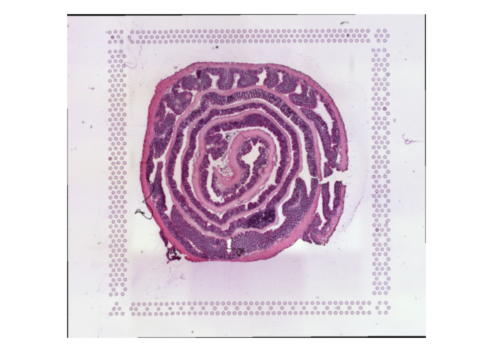
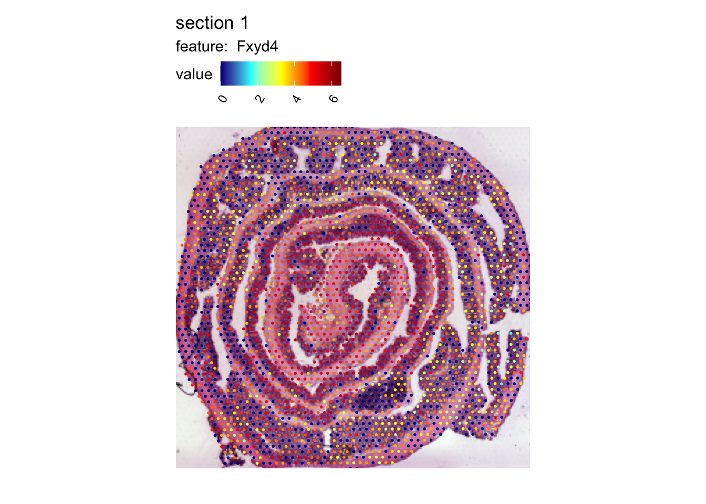
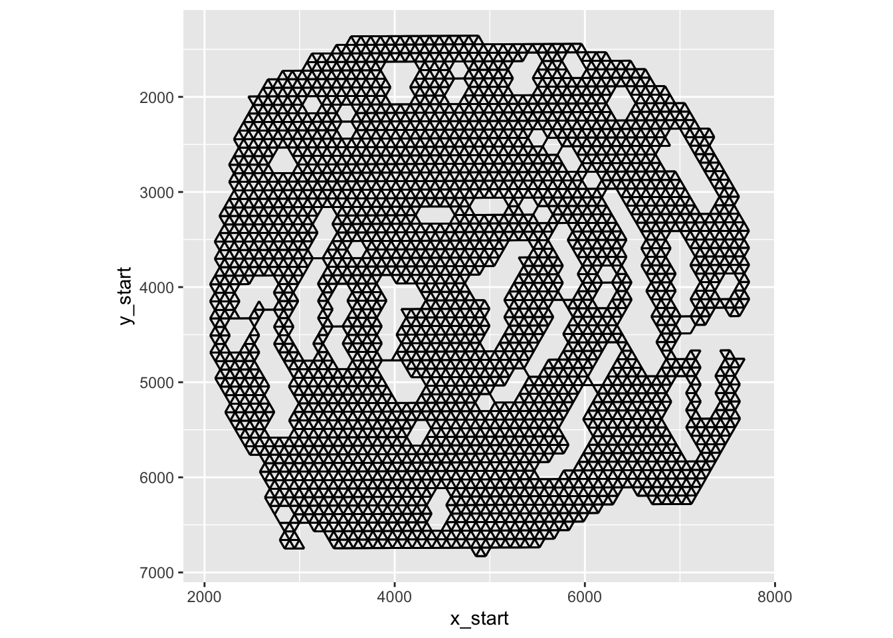
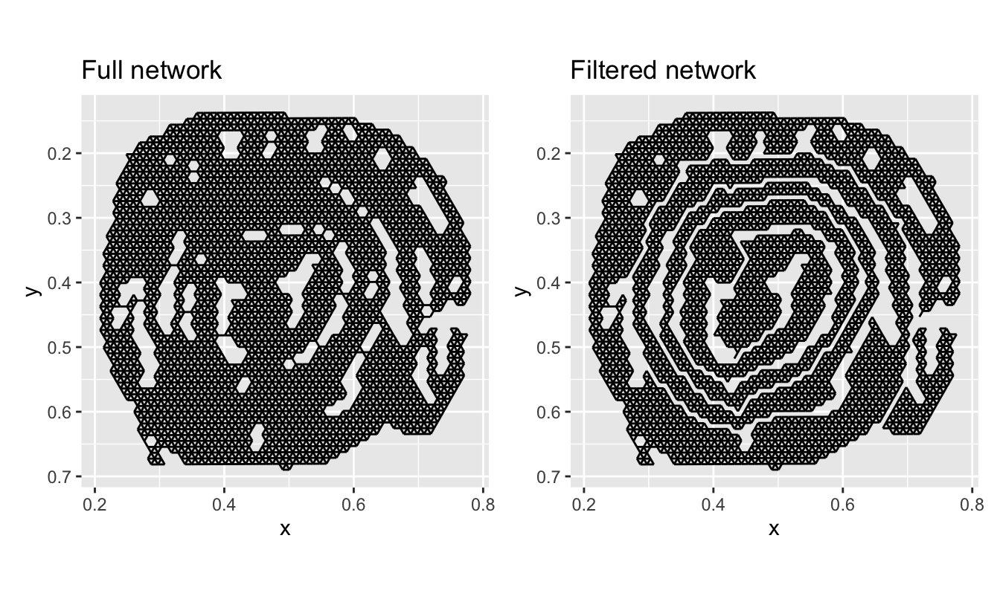
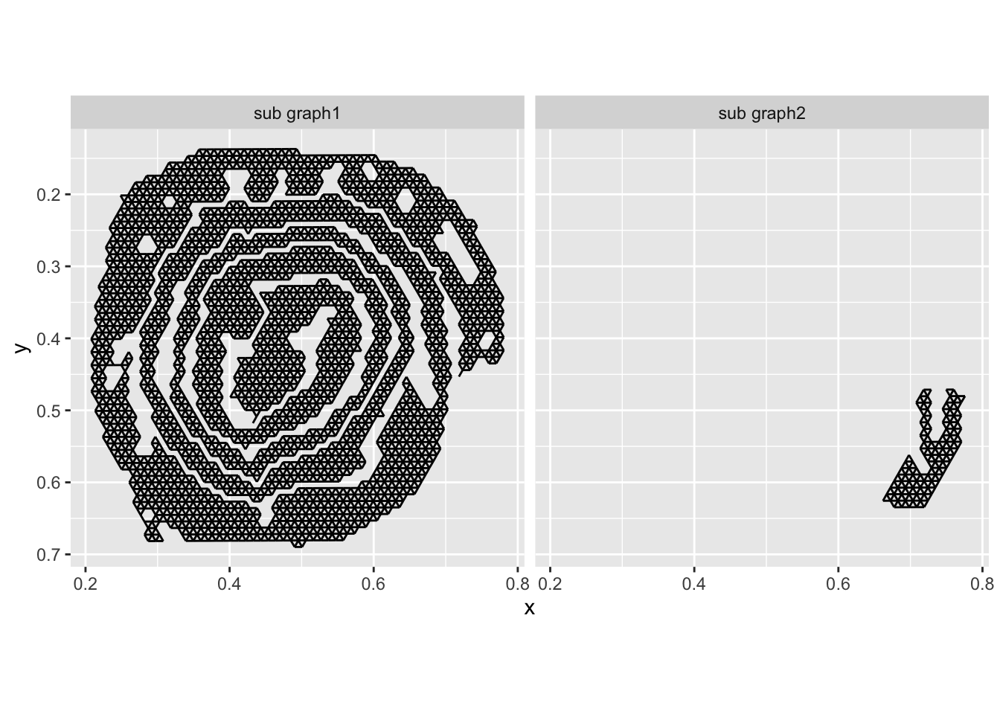
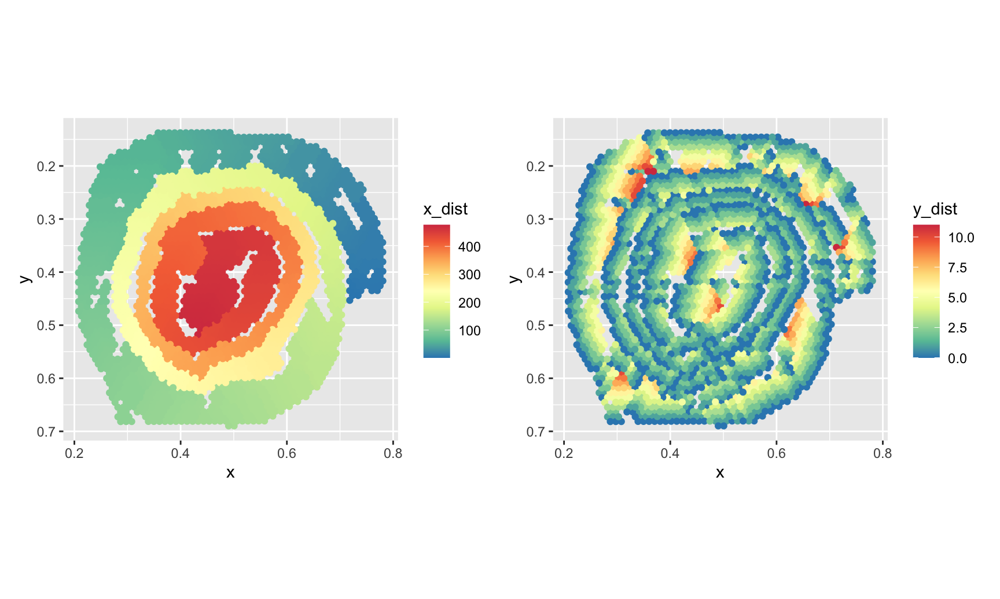
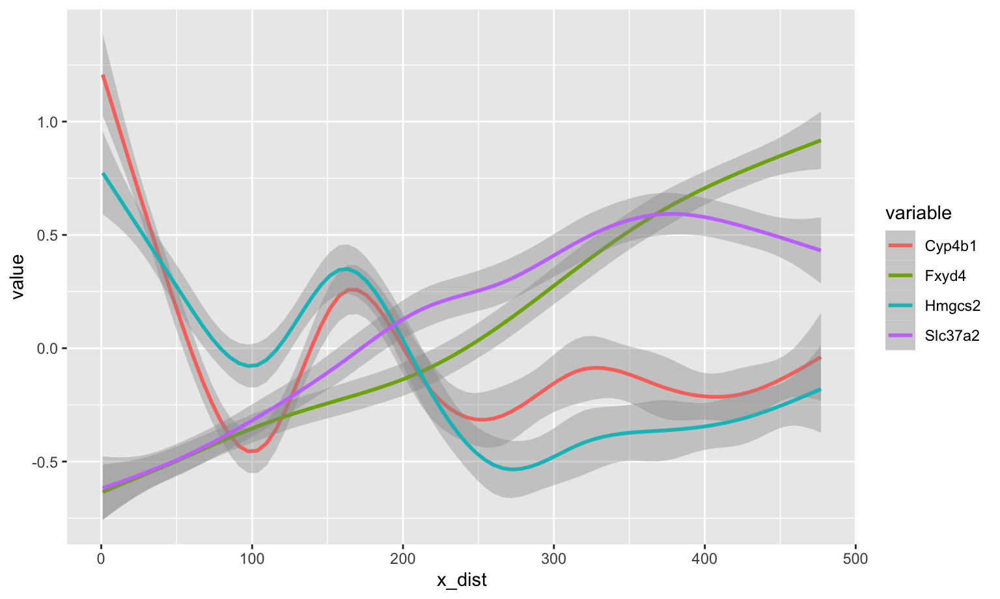
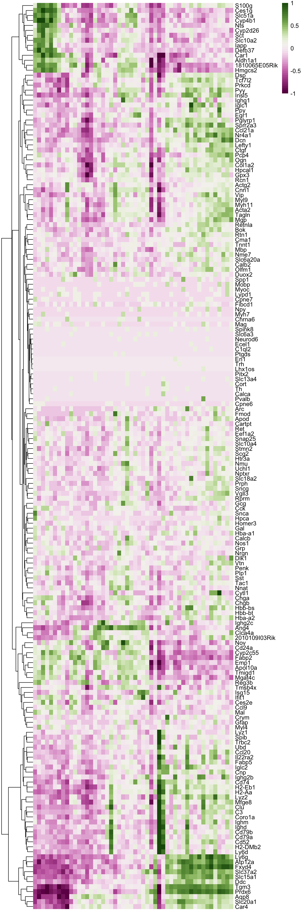

library(STUtility2)
se_mcolon <- readRDS(system.file("extdata/mousecolon",
"se_mcolon",
package = "STUtility2"))Digital unrolling
Introduction
In this tutorial, we will look at how to perform digital unrolling of folded “swiss roll” tissue sections.
The data set comes from a “swiss roll” of a mouse colon which was published by M. Parigi et al. (including yours truly) The spatial transcriptomic landscape of the healing mouse intestine following damage.
Let’s have a quick look at the data
library(STUtility2)
se_mcolon <- se_mcolon |>
LoadImages()── Load H&E images ──ℹ Loading image from /Users/ludviglarsson/miniconda3/envs/R4.2/lib/R/library/STUtility2/extdata/mousecolon/spatial/tissue_hires_image.png
✔ Scaled image from 1804x2000 to 400x443 pixels
ℹ Saving loaded H&E images as 'rasters' in Seurat objectImagePlot(se_mcolon)
In the H&E image, we can clearly see the organization of large part of the lower intestine. The outermost part of the roll is the ascending colon and the center of the roll is the rectum.
We can identify genes with a regionalized pattern pretty easily but it would we great if we could somehow unroll the tissue so that we can investigate gene expression patterns along the proximal-distance axis.
Below is a spatial map of the expression of Fxyd4 which is up-regulated closer to the distal part of the colon.
MapFeatures(se_mcolon, features = "Fxyd4",
image_use = "raw", override_plot_dims = TRUE,
colors = c("darkblue", "cyan", "yellow", "red", "darkred"))
The goal of this tutorial is to show how STUtility2 can be used to find an “unrolled” coordinate system. To achieve this, we can start a shiny application with CutSpatialNetwork which will allow us to do some interesting stuff. More about that later.
Before we get started, we need to do a little bit of pre-processing. First, we will tile the H&E image using TileImage. Tiling is necessary to make it possible to visualize the H&E images in a more interactivee way. The path to the raw H&E image can be found with GetStaffli(se_mcolon)@imgs.
NB: If the image file has been moved, TileImage the path might no longer be valid. Make sure that the path is valid before proceeding. To get decent resolution, we you should use the “tissue_hires_image.png” output by spaceranger.
im <- GetStaffli(se_mcolon)@imgs[1]
sprintf("File exists: %s", file.exists(im))[1] "File exists: TRUE"Now we can load the image with magick, tile the image and export it to a local directory. The function returns the path to the directory the tiles wheee exported to. We will save this to a variable called tilepath
library(magick)
im <- image_read(im)
tilepath <- TileImage(im = im, outpath = "~/Downloads/")The CutSpatialNetwork function requires another file to work properly. This file holds information about the “spatial network” (see GetSpatialNetwork for details) which will be used in the shiny application to define how spots in the Visium data are connected to each other.
To demonstrate what this means, we can generate a spatial network and visualize it.
spatnet <- GetSpatialNetwork(se_mcolon)[[1]]
library(ggplot2)
ggplot() +
geom_segment(data = spatnet, aes(x = x_start, xend = x_end, y = y_start, yend = y_end)) +
scale_y_reverse() +
coord_fixed()
In the plot above, you can see the edges that connects neighboring spots to each other.
Now let’s export this spatial network to make it available for our shiny application.
export_graph(se_mcolon, sampleID = 1, outdir = tilepath)Now we are ready to run the app! One the app loads, you should see the H&E image with spots and edges. The goal is to disconnect the layer of the roll by cutting the edges between spots in different layers. Cutting can be done by holding the SHIFT key while move the cursor across edges which will make them red. You can also “repair” edges by holding the CTRL key.
The image below illustrates how edges between two layers have been sliced.

Once all edges has been cut, you have to press the “Quit and save” button. If you just close the app without pressing “Quit and save”, the results will not be returned back to R.
NB: We need to make sure to save the output to a variable. Here, we will save the output to tidy_network.
tidy_network <- CutSpatialNetwork(tilepath)For downstream steps, it is crucial that the layers have been separated appropriately. Even a single edge between two layer will make it impossible to run down stream steps reliably. The image below demonstrates a situation where the separation will fail.

Luckily, any changes you made in the app are by default written to the spatial network file, so if you miss something, you can simply run the app again and fix the issue.
Let’s plot our full network and our filtered network:
library(tidygraph)
library(patchwork)
library(dplyr)
edges_full <- tidy_network |>
activate(edges) |>
as_tibble()
edges_filtered <- tidy_network |>
activate(edges) |>
as_tibble() |>
filter(keep)
p1 <- ggplot(edges_full,
aes(x, xend = x_end, y, yend = y_end)) +
geom_segment() +
scale_y_reverse() +
coord_fixed() +
ggtitle("Full network")
p2 <- ggplot(edges_filtered,
aes(x, xend = x_end, y, yend = y_end)) +
geom_segment() +
scale_y_reverse() +
coord_fixed() +
ggtitle("Filtered network")
p1 + p2
And just like that, we have separated the the layers!
Now comes the part where we do the actual “unrolling” using AdjustTissueCoordinates. There are a few important things to note here. AdjustTissueCoordinates applies an algorithm to sort nodes in the spatial graph between the end points. Distances between nodes are used as a proxy for the actual distances in the tissue. These distances between nodes are the shortest paths, i.e. the minimum number of edges needed to visit (geodesic). For obvious reasons, distances cannot be calculated between nodes that are not connected, and for this reason, the function only handles connected graphs.
Unfortunately, our roll is not fully connected, so the function will only deal with the largest sub graph.
all_networks <- to_components(tidy_network |>
activate(edges) |>
filter(keep))
edges_labeled <- do.call(bind_rows, lapply(seq_along(all_networks), function(i) {
all_networks[[i]] |>
activate(edges) |>
as_tibble() |>
mutate(graph = paste0("sub graph", i))
}))
ggplot(edges_labeled, aes(x, xend = x_end, y, yend = y_end)) +
geom_segment() +
scale_y_reverse() +
coord_fixed() +
facet_grid(~graph)
The second, smaller sub graph will be discarded.
Another thing to note is that this function relies on a few assumptions about the shape of the folded tissue. If you were to try it on somethings completely different, let’s say a tissue folded in a zig-zag shape, it might not work as well.
tidy_network_adjusted <- AdjustTissueCoordinates(full_graph = tidy_network)ℹ Removing 537 edges
ℹ Checking for disconnected graphs
ℹ More than 1 subgraph identified. Keeping the largest subgraph
ℹ Calculating pairwise geodesics between nodes in graph
ℹ Identifying end points
ℹ Finding shortest path beetween end points
ℹ Checking location of nodes relative to shortest path nodes
ℹ Rescaling y distances to ensure non-negative values
✔ Finished!Our tidy_network_adjusted variable holds a tibble with the node coordinates and the new x_dist and y_dist coordinates. As a sanity check, we can color our original spatial map by the new distance values to see if they make sense.
p1 <- ggplot(tidy_network_adjusted, aes(x, y, color = x_dist)) +
geom_point() +
scale_color_gradientn(colours = RColorBrewer::brewer.pal(n = 9, name = "Spectral") |>
rev()) +
coord_fixed() +
scale_y_reverse()
p2 <- ggplot(tidy_network_adjusted, aes(x, y, color = y_dist)) +
geom_point() +
scale_color_gradientn(colours = RColorBrewer::brewer.pal(n = 9, name = "Spectral") |>
rev()) +
coord_fixed() +
scale_y_reverse()
p1 + p2
The x_dist coordinates, which is arguably the most relevant for regionalization patterns, looks quite good. The y_dist coordinate shows the distances from the base of the roll (muscle tissue) to the edge (mucosa). It is clear that the y_dist are a bit misplaced here misplaced here and there which is because of the uneven thickness of the tissue and protruding structures, in particular in the proximal part.
Now that we have our new coordinate system, we can start looking at regionalization of gene expression along the proximal-distal axis.
library(tibble)
library(tidyr)
selected_genes <- c("Fxyd4", "Slc37a2", "Hmgcs2", "Cyp4b1")
se_mcolon <- ScaleData(se_mcolon)
gg <- FetchData(se_mcolon, vars = selected_genes, slot = "scale.data") |>
rownames_to_column(var = "name") |>
left_join(y = tidy_network_adjusted, by = "name") |>
pivot_longer(all_of(selected_genes), names_to = "variable", values_to = "value")
ggplot(gg, aes(x_dist, value, color = variable)) +
geom_smooth()
With these coordinates in our hands, it is quite straightforward to extract genes whose expression depend on distance along the proximal-distal axis. This will not be part of this tutorial, but below is a rather simple way of sorting genes by expression in a heatmap. Here, it becomes quite clear what genes are regionalized. There is one part of the heatmap that stands out, just on the right side of the center, which are the genes that are expressed in a lymphoid structure located in that part of the colon.
sorted_spots <- tidy_network_adjusted |>
arrange(x_dist) |>
pull(name)
# Get scale data
scale_data <- GetAssayData(se_mcolon,
slot = "scale.data",
assay = "Spatial")[VariableFeatures(se_mcolon), sorted_spots] |>
as.matrix()
# Bin data
bins <- cut(1:ncol(scale_data), breaks = 50)
binMat <- do.call(cbind, lapply(levels(bins), function(lvl) {
rowMeans(scale_data[, bins == lvl])
}))
pheatmap::pheatmap(binMat, cluster_cols = FALSE, border_color = FALSE,
breaks = seq(-1, 1, length.out = 50),
color = scico::scico(palette = "bam", n = 51))